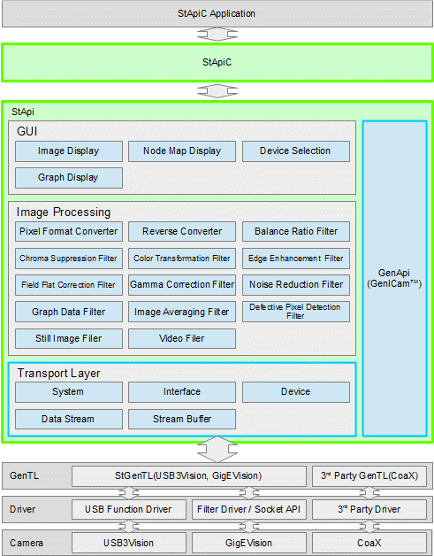

|
Sentech SDK C
|
StApi supports USB3Vision, GigEVision, and CoaXPress cameras.
StApi consists of three main functionalities as follows:
Camera control function (Transport Layer)
This provides the functions to change camera settings and acquire image data and event data. The communication with cameras uses GenTL module. The GenTL module included in this SDK supports USB3Vision and GigEVision. By using the GenTL module provided by CoaXPress board makers, the StApi can also support CoaXPress cameras. To change the settings of camera, GenApi is used. If the image processing and GUI functions are not needed, the functions in the blue box can still provide basic operations with cameras.
| Module | Main feature |
|---|---|
| System | For acquiring information from CTI files(DLL files for GenTL). |
| Interface | For setting related to interface and acquiring information from connected cameras. |
| Device | For changing camera settings. |
| Data Stream | For setting the stream related to image data. |
| Stream Buffer | For acquiring the information of the streaming buffer. |
Image processing function (Image Processing)
This provides the functions for image processing, which consists of three types of processing/functionalities, as follows:
| Type | Feature | ||||||||||||||||||||
|---|---|---|---|---|---|---|---|---|---|---|---|---|---|---|---|---|---|---|---|---|---|
| Filter | Process the input data and overwrite it onto original buffer. The pixel format will remain the same.
| ||||||||||||||||||||
| Converter | Convert the input data and put it into a specified output buffer.
| ||||||||||||||||||||
| Filer | Generate still image files or animated image files.
|
| Module | Main usage |
|---|---|
| Device Selection | For camera selection window |
| Image Display | For image preview window |
| Node Map Display | For nodemap display/setting window |
| Graph Display | For graph display window |

StApiC can be used in the following operating systems:
Linux OS (the same as C++)
The StApiC supports the following development environments:
Linux OS: gcc
The build method for each development environment is as follows. Before building the sample program, please unpack the compressed sample program for C language (Sample_C.zip) to the path with write permission. In some development environments, you might need to change the size prefix of the format specifiers, such as the printf function in the sample program.
The argument of the function that acquires string requires buffer (char *szText) and its size (size_t *pnLen). If the size of the string to be obtained is unknown, you can obtain the required size by calling the function with NULL argument for the buffer as shown below. After allocating the buffer with the obtained size, call again the function with the allocated buffer as the buffer argument.
To install the StApi SDK in Linux, uncompress the package file (*.tgz) and execute the installer file with extension .run, as follows (superuser password is required):
By default, the installation directory is set to /opt/sentech. The installation directory is stored in environment variable STAPI_ROOT_PATH. To automatically answer all questions during installation as "Yes" and installation destination is set to /opt/sentech, use the following command:
The installation results are as follows.
| Files/Directories | Contents | ||||||||||
|---|---|---|---|---|---|---|---|---|---|---|---|
| /etc/udev/rules.d/30-stcam.rules | udev rules to control the access of USB3Vision camera | ||||||||||
| ${STAPI_ROOT_PATH}/.stprofile | Environment variable setting for the SDK.
$ echo 'source ${STAPI_ROOT_PATH}/.stprofile' >> $HOME/.bashrc $ sudo cp ${STAPI_ROOT_PATH}/.stprofile /etc/profile.d/stprofile.sh | ||||||||||
| ${STAPI_ROOT_PATH}/bin/* |
| ||||||||||
| ${STAPI_ROOT_PATH}/include/* |
| ||||||||||
| ${STAPI_ROOT_PATH}/lib/* |
| ||||||||||
| ${STAPI_ROOT_PATH}/share/* |
|
To uninstall the StApi SDK, execute: